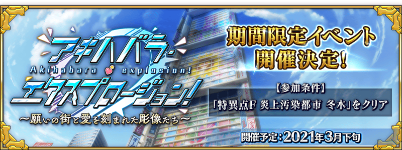

預定舉辦期間限定活動「Akihabara Explosion！ ～願望的街道與被刻上愛的雕像們～」！
靠從者總動員挑戰關卡來攻略，制霸秋葉原的街道吧！
本活動中，攻略的關鍵是借助許多從者的力量！
強化更多的從者，向活動挑戰吧！
詳細敬請期待續報。
◆活動舉辦預定◆
2021年3月下旬
◆活動參加條件◆
滿足以下條件的御主才能參加
・通過「特異點F 炎上汙染都市 冬木」
「終局特異點」通過水準的敵人出現！
期間限定活動「Akihabara Explosion！ ～願望的街道與被刻上愛的雕像們～」是會出現「終局特異點」通過水準敵人的試驗活動。


為了記念期間限定活動「Akihabara Explosion！ ～願望的街道與被刻上愛的雕像們～」舉辦，實施特別次數登入獎勵。
在期間中登入9次(1天算1次)的話，贈送黃金果實4個、聖晶石3個、呼符2張！
◆舉辦期間◆
2021年3月15日(一) 17:00～3月25日(四) 2:59
※在舉辦期間內登入合計9天的話，可領取所有的登入獎勵。
◆贈送對象◆
2021年3月24日(三) 2:59前通過「特異點F 炎上汙染都市 冬木」的御主對象
※上述時間前，在管理室(ターミナル)畫面的關卡橫幅必須要有「CLEAR」的文字顯示。
| 登入次數 | 贈送內容 | |
|---|---|---|
| 第1次 |

|
黃金果實 1個 |
| 第2次 |

|
呼符 1張 |
| 第3次 |
|
黃金果實 1個 |
| 第4次 |
|
黃金果實 1個 |
| 第5次 |
|
黃金果實 1個 |
| 第6次 |

|
聖晶石 1個 |
| 第7次 |
|
聖晶石 1個 |
| 第8次 |
|
聖晶石 1個 |
| 第9次 |
|
呼符 1張 |
※第1次的登入獎勵自3月15日(一) 17:00以後配發。 ※之後的登入獎勵會在每天3:00配發。 ※合計9天內能領取，但根據成為贈送對象的時間點，可能無法到此上限。

為了記念期間限定活動「Akihabara Explosion！ ～願望的街道與被刻上愛的雕像們～」舉辦，在迦勒底之門內開放全種類每日出現的關卡「蒐集種火」與「修練場」。
利用這點強化更多的從者，預備「Akihabara Explosion！ ～願望的街道與被刻上愛的雕像們～」吧！
◆舉辦期間◆
2021年3月15日(一) 17:00～3月29日(一) 11:59
※請注意由於以期間限定出現的「蒐集種火」及「修練場」與平常每日出現的「蒐集種火」及「修練場」的關卡不同，不會繼承「關卡情報」。
【全天開放的蒐集種火一覧】
| 關卡名 | 可做為戰利品獲得 的主要道具 |
攻略推薦 職階 |
|---|---|---|
| 【活動舉辦記念】 週一 蒐集種火<槍・殺篇> 初級、中級、上級、超級 |
Lancer、Assassin、Berserker的經驗值卡 |   |
| 【活動舉辦記念】 週二 蒐集種火<劍・騎篇> 初級、中級、上級、超級 |
Saber、Rider、Berserker的經驗值卡 |   |
| 【活動舉辦記念】 週三 蒐集種火<弓・術篇> 初級、中級、上級、超級 |
Archer、Caster、Berserker的經驗值卡 |   |
| 【活動舉辦記念】 週四 蒐集種火<槍・殺篇> 初級、中級、上級、超級 |
Lancer、Assassin、Berserker的經驗值卡 | |
| 【活動舉辦記念】 週五 蒐集種火<劍・騎篇> 初級、中級、上級、超級 |
Saber、Rider、Berserker的經驗值卡 | |
| 【活動舉辦記念】 週六 蒐集種火<弓・術篇> 初級、中級、上級、超級 |
Archer、Caster、Berserker的經驗值卡 | |
| 【活動舉辦記念】 週日 蒐集種火<隨機篇> 初級、中級、上級、超級 |
Saber、Archer、Lancer、Rider、Caster、Assassin、Berserker的經驗值卡(隨機) | - |
※Berserker在所有每日關卡皆為有效職階。
【全天開放的修練場一覧】
| 關卡名 | 戦利品として獲得できる 主な道具 |
攻略推薦 職階 |
|---|---|---|
| 【活動舉辦記念】 週一 弓之修練場 初級、中級、上級、超級 |
Archer的靈基再臨用道具、Archer的技能強化素材道具 | |
| 【活動舉辦記念】 週二 槍之修練場 初級、中級、上級、超級 |
Lancer的靈基再臨用道具、Lancer的技能強化素材道具 | |
| 【活動舉辦記念】 週三 狂之修練場 初級、中級、上級、超級 |
Berserker的靈基再臨用道具、Berserker的技能強化素材道具 | ALL |
| 【活動舉辦記念】 週四 騎之修練場 初級、中級、上級、超級 |
Rider的靈基再臨用道具、Rider的技能強化素材道具 |  |
| 【活動舉辦記念】 週五 術之修練場 初級、中級、上級、超級 |
Caster的靈基再臨用道具、Caster的技能強化素材道具 | |
| 【活動舉辦記念】 週六 殺之修練場 初級、中級、上級、超級 |
Assassin的靈基再臨用道具、Assassin的技能強化素材道具 | |
| 【活動舉辦記念】 週日 劍之修練場 初級、中級、上級、超級 |
Saber的靈基再臨用道具、Saber的技能強化素材道具 | |
※Berserker在所有每日關卡皆為有效職階。

為了記念期間限定活動「Akihabara Explosion！ ～願望的街道與被刻上愛的雕像們～」舉辦，下述的期間中、所有從者的幕間物語消耗AP變成1/2！
※就算在戰鬥中撤退的情況，也會是同様的消耗量。
※「靈基解放關卡」為消耗AP1/2的對象外。
◆舉辦期間◆
2021年3月15日(一) 17:00～3月29日(一) 11:59
◆對象關卡◆
所有的幕間物語
其他還有，期間限定「職階別Pick Up召喚(每日交替)」舉辦中！
關於詳情，請自下述橫幅確認。
■「職階別Pick Up召喚(每日交替)」詳細情報